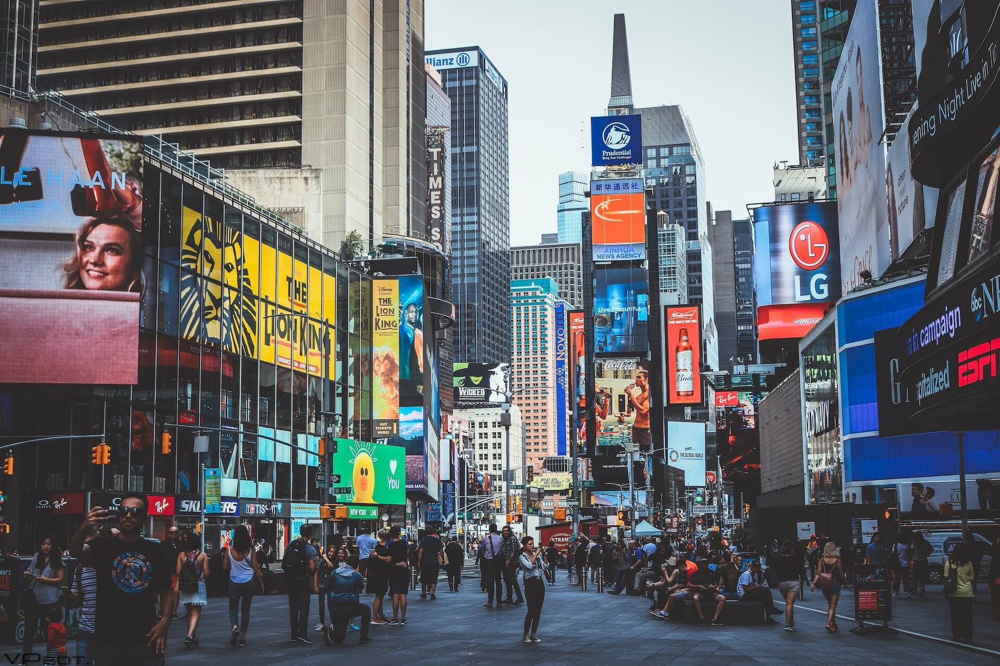
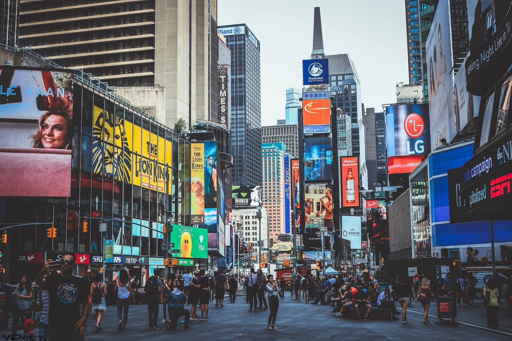

"From Sun-Kissed Shores to Urban Horizons"

During my recent trip to the Maldives, I was utterly enchanted by the unparalleled beauty of this tropical paradise. The pristine, powdery beaches, crystal-clear turquoise waters, and overwater bungalows created a dreamlike setting. Snorkeling among vibrant coral reefs, swimming with graceful marine life, and watching breathtaking sunsets became daily rituals.
The Maldivian hospitality was equally extraordinary, leaving a lasting impression on my heart. I can say with certainty that the Maldives is a slice of heaven on Earth, a destination that stole my heart and has me yearning for a return to its serene and captivating shores.
My journey to Dubai was nothing short of a sensory extravaganza. From the moment I set foot in this remarkable city, I was captivated by its sheer opulence and modernity. The towering skyscrapers, including the iconic Burj Khalifa, and the extravagant shopping malls left me in awe. Exploring the historic souks, I experienced a beautiful blend of tradition and innovation.
The Arabian cuisine was a delight to my taste buds, and the adventures in the desert, like dune bashing and camel rides, added an adrenaline rush to the experience. Dubai's cultural diversity and its ability to seamlessly merge the old with the new is truly remarkable. It's a city that never sleeps, and I left with unforgettable memories and a strong desire to return to this dynamic metropolis.
 

New York, the city that never sleeps, left an indelible mark on my soul. The moment I stepped foot onto the bustling streets of the Big Apple, I was swept up in its energy and diversity. The iconic skyline, illuminated by the glittering lights of Times Square and the Empire State Building, was a sight to behold. Central Park provided an oasis of tranquility in the heart of the concrete jungle, and the city's world-renowned museums and theaters offered a cultural.
I savored the flavors of international cuisine, from a classic New York-style pizza slice to gourmet delights in Chinatown. Walking through different neighborhoods, each with its own character, I felt the heartbeat of this vibrant city. From the historic streets of Brooklyn to the trendy districts of Manhattan, New York's eclectic tapestry welcomed me with open arms, leaving me with a profound love for its urban magic.